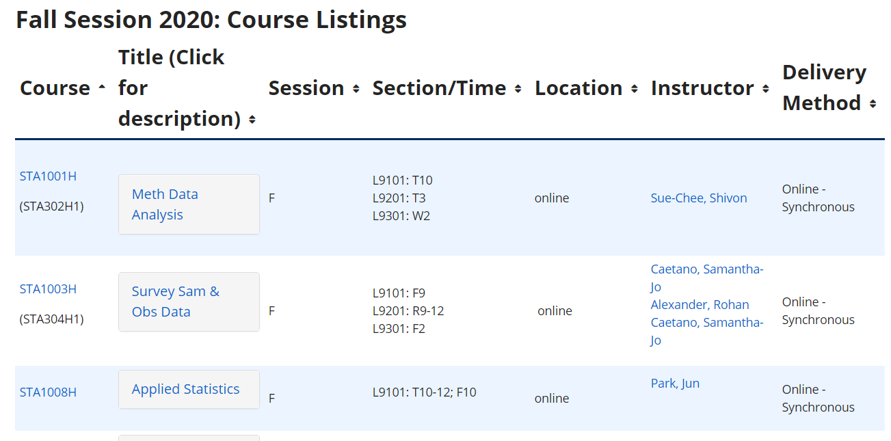

Josh Murray
rvest package including:# to install rvest
install.packages("rvest")
# to get help with rvest
help(package = 'rvest')# help(package = 'rvest')
# list all exported functions in a package
getNamespaceExports("rvest")## [1] "xml" "html_table" "xml_node"
## [4] "guess_encoding" "xml_tag" "back"
## [7] "is.session" "html_session" "repair_encoding"
## [10] "html_form" "html_children" "html_attr"
## [13] "html_text" "follow_link" "session_history"
## [16] "html_nodes" "html_node" "set_values"
## [19] "submit_form" "pluck" "html"
## [22] "jump_to" "%>%" "html_name"
## [25] "minimal_html" "html_attrs" "html_tag"
## [28] "xml_nodes" "google_form"# Get help for a specific function
?html_text
# find any reference to 'html' in R packages
??html
# run an example from the package documentation
example(html_text)left_hand_side %>% right_hand_side
# example
summarise(group_by(filter(iris, Sepal.Width < 3.1), Species), mean(Sepal.Length, na.rm = T))
# same as
iris %>% filter(Sepal.Width < 3.1) %>% group_by(Species) %>% summarize(mean(Sepal.Length, na.rm = T))
# load the package
library(rvest)
# assign the url to a variable
url <- 'https://www.statistics.utoronto.ca/curriculum-courses/fall-winter-2020-21-timetable'
# read the webpage and extract any tables
graduate_calendar <- url %>% read_html %>% html_table()
# What type of object is returned?
str(graduate_calendar)## List of 2
## $ :'data.frame': 1 obs. of 9 variables:
## ..$ X1: chr "Abbreviations:"
## ..$ X2: chr "M\nT\nW\nR\nF"
## ..$ X3: chr "=\n=\n=\n=\n="
## ..$ X4: chr "Monday\nTuesday\nWednesday\nThursday\nFriday"
## ..$ X5: logi NA
## ..$ X6: chr "Meeting\nSession:"
## ..$ X7: chr "L0101\nL5101"
## ..$ X8: chr "=\n="
## ..$ X9: chr "9:00 a.m. to 5:00 p.m.\n5:00 p.m. on"
## $ :'data.frame': 50 obs. of 7 variables:
## ..$ X1: chr [1:50] "Course" "STA1001H" "" "STA1003H" ...
## ..$ X2: chr [1:50] "Session Code" "F" "" "F" ...
## ..$ X3: chr [1:50] "Title" "Methods of Data Analysis I" "" "Survey Sam & Obs Data" ...
## ..$ X4: chr [1:50] "Section" "L0101" "L5101" "L0101" ...
## ..$ X5: chr [1:50] "Time" "T10-12;R10" "R5-8" "W1-2" ...
## ..$ X6: chr [1:50] "Location" "OI G162" "ES 1050" "MS 2158" ...
## ..$ X7: chr [1:50] "Instructor" "M. Ebden" "M. Ebden" "D. Banjevic" ...# how many list items
length(graduate_calendar)## [1] 2str(graduate_calendar[[1]])## 'data.frame': 1 obs. of 9 variables:
## $ X1: chr "Abbreviations:"
## $ X2: chr "M\nT\nW\nR\nF"
## $ X3: chr "=\n=\n=\n=\n="
## $ X4: chr "Monday\nTuesday\nWednesday\nThursday\nFriday"
## $ X5: logi NA
## $ X6: chr "Meeting\nSession:"
## $ X7: chr "L0101\nL5101"
## $ X8: chr "=\n="
## $ X9: chr "9:00 a.m. to 5:00 p.m.\n5:00 p.m. on"str(graduate_calendar[[2]])## 'data.frame': 50 obs. of 7 variables:
## $ X1: chr "Course" "STA1001H" "" "STA1003H" ...
## $ X2: chr "Session Code" "F" "" "F" ...
## $ X3: chr "Title" "Methods of Data Analysis I" "" "Survey Sam & Obs Data" ...
## $ X4: chr "Section" "L0101" "L5101" "L0101" ...
## $ X5: chr "Time" "T10-12;R10" "R5-8" "W1-2" ...
## $ X6: chr "Location" "OI G162" "ES 1050" "MS 2158" ...
## $ X7: chr "Instructor" "M. Ebden" "M. Ebden" "D. Banjevic" ...graduate_calendar <- url %>% read_html %>% html_table(header = T)
str(graduate_calendar[[2]])## 'data.frame': 49 obs. of 7 variables:
## $ Course : chr "STA1001H" "" "STA1003H" "" ...
## $ Session Code: chr "F" "" "F" "" ...
## $ Title : chr "Methods of Data Analysis I" "" "Survey Sam & Obs Data" "" ...
## $ Section : chr "L0101" "L5101" "L0101" "" ...
## $ Time : chr "T10-12;R10" "R5-8" "W1-2" "F 1-3" ...
## $ Location : chr "OI G162" "ES 1050" "MS 2158" "OIG 162" ...
## $ Instructor : chr "M. Ebden" "M. Ebden" "D. Banjevic" "" ...library(dplyr)
graduate_calendar[[2]] %>% filter(Instructor != '') %>%
group_by(Instructor) %>% count() %>% arrange(desc(n)) %>% head## # A tibble: 6 x 2
## # Groups: Instructor [6]
## Instructor n
## <chr> <int>
## 1 S. Jaimungal 4
## 2 A. Badescu 3
## 3 D. Brenner 3
## 4 J. Rosenthal 3
## 5 M. Ebden 3
## 6 S. Sue-Chee 3# assign the url to a variable
url <- 'http://utstat.toronto.edu/?page_id=11365'
# read the webpage and extract any tables
graduate_calendar <- url %>% read_html %>%
html_node('table:nth-child(10)') %>% html_table(header = T)
str(graduate_calendar)## 'data.frame': 49 obs. of 7 variables:
## $ Course : chr "STA1001H" "" "STA1003H" "" ...
## $ Session Code: chr "F" "" "F" "" ...
## $ Title : chr "Methods of Data Analysis I" "" "Survey Sam & Obs Data" "" ...
## $ Section : chr "L0101" "L5101" "L0101" "" ...
## $ Time : chr "T10-12;R10" "R5-8" "W1-2" "F 1-3" ...
## $ Location : chr "OI G162" "ES 1050" "MS 2158" "OIG 162" ...
## $ Instructor : chr "M. Ebden" "M. Ebden" "D. Banjevic" "" ...p>this is displayed as a paragraph</p> <h>this is displayed as a header</h><a href="https://www.github.com">Click this link to go to github</a>html_node, html_nodes: used for navigating through trees of html elementsxml_children: extract children of html_nodehtml_attr: extract a specific attribute of an html elementhtml_text: extract the text of an html elementhtml_table: extract an html table